The first print decision · 20–30 minutes
From bracket model to slicer evidence
Use the bracket above. Your goal is to choose which face sits on the build plate and explain what changes in the sliced preview. The browser workshop shows geometry; a real slicer shows the printer's layers and supports. You can complete the prediction today even if your class is not printing.
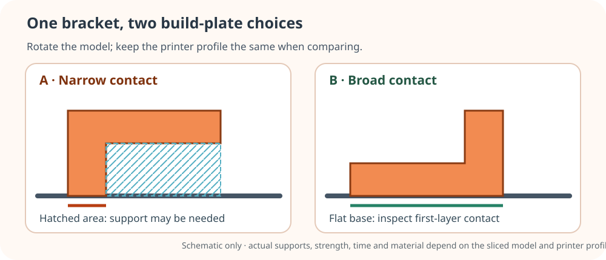
Grades K–2 · Point and predict
With a partner, find the widest flat face. Point to the part hanging in the air. Draw or say which side should face the plate.
Grades 3–5 · Compare
Export with help. Compare upright and rotated slicer previews. Record which one needs supports and which has more bed contact.
Grades 6–12 · Defend
Keep the approved profile fixed. Compare time, material, support contact and the direction of the expected load. State one tradeoff and a small test.
1 · Prepare the model
- Rotate and inspect the bracket in the workshop.
- Export STL in millimeters. Save the editable project too.
- In the classroom slicer, check the imported dimensions before slicing.
2 · Compare two orientations
- Use the teacher-approved printer, material and profile.
- Slice once upright and once with a broad face on the plate.
- Inspect the first layer, unsupported regions, support contact and layer direction. Record the slicer's own estimates.
Teacher handoff · before any physical print
Confirm the model's size and orientation in the approved slicer; inspect the first layer, supports, toolpath preview and estimated duration. Choose the room's approved material and printer profile. The teacher controls the machine, ventilation, hot nozzle, heated bed, removal tools and cooling. After a supervised test, students compare the actual result with their prediction and revise one variable at a time.
Blueprint studio · Fold & Unfold game · 15–30 minutes
Fold & Unfold: read and draw the blueprint
Before a part goes to a printer or a machine shop, engineers draw it in CAD software like AutoCAD. The drawing shows each orthographic view separately: the part seen straight from the top, the front and the right side. Picture the part sitting inside a glass box. Trace what you see on each glass wall, then unfold the walls flat. That flat sheet is the blueprint. In third-angle projection, the top view sits above the front view and the right view sits beside it. Edges you can't see because something is in front of them are drawn as dashed hidden lines.
Unfold · 3D → blueprint
You get the folded part as an isometric view. Drag it to look around. Then draw its TOP, FRONT and RIGHT views with the Line tool, and press Check.
Fold · blueprint → 3D
You get the three-view blueprint. Stack blocks on the print bed until your solid casts exactly those views. If a different solid fits the same views, it counts, because the drawing allows it.
Why this is a printing skill
Every part here rises straight up from the bed, so it would print without supports. The top view is the part's footprint on the plate, so it shows you the first layer.
How to drive it like CAD (mouse, keys and the command line)
- Line: click a start point, then click each next point; the line keeps going until you press Esc or right-click. Or press, drag and let go for one line. ORTHO is on, so lines go straight across or straight up.
- Layers: draw edges you can see on VISIBLE (solid). Switch to HIDDEN (dashed) for edges behind something. On Hard, hidden lines count.
- Keyboard: click the sheet, then use the arrow keys to move the crosshair and Enter to place a point. T / F / R picks the view, L / E picks Line or Erase, and H swaps the layer.
- Command line: type
LINE 0,0 3,0 3,2(orL, then points;@2,0means "2 right of the last point"),ERASE,VIEW TOP,LAYER HIDDEN,UNDO,CHECK. In Fold mode,BUILD 1,0 3stacks column 1, front row, 3 blocks high. TypeHELPfor the full list. - Glass box: once a drawing checks out, the glass box unfolds to show where each view comes from.
Grade bands: K–2 play Fold on Easy with a partner and count blocks out loud. Grades 3–5 play Unfold on Easy and Medium. Grades 6–12 play Hard in both modes, where the hidden lines count. Then they explain what someone could build wrong from a blueprint that left the hidden lines out.
Production workflow, examples and deeper reference
Start with the editable technique workshop above. Reuse your model in the next lesson. The production workflow below extends the browser exercise and helps you test work made in your chosen app.
Fabrication · Lesson 03 · FDM & Slicer Mastery
Plan a printable orientation
Understand every slicer setting, why it matters, and how to choose the right combination for your scenario — from quick prototypes to strong functional parts to ultra-fine display models.
Start here · 35–45 minute investigation
Make a decision you can defend
Your team needs a lightweight prototype before the next class. Can you reduce printing time without losing the features you need? Predict a change, compare two settings, then explain the tradeoff.
- Observe the walls, internal infill, and solid skins in the preview.
- Save a baseline. Change just one setting and compare time and material.
- Explain what this model cannot tell you, then plan a small physical test.
01 — How FDM 3D Printing Works
Plastic, Heat & Layers
FDM (Fused Deposition Modelling) is the most common type of desktop 3D printing. A spool of plastic filament is fed through a heated nozzle called a hotend, which melts it and deposits it in precise paths on a build platform. The nozzle and build platform move apart by one layer height after each layer, and the process repeats until a full 3D object has been built up, one thin slice at a time.
A slicer is the software (Cura, PrusaSlicer, Bambu Studio, OrcaSlicer) that converts your 3D model file (STL/3MF) into the G-code instructions the printer follows. Every setting below lives inside the slicer — understanding them is what separates a print that works from one that fails.
Hotend & Nozzle
tap to revealHotend & Nozzle
The heated nozzle melts filament at 180–300 °C depending on material. Standard nozzles are 0.4 mm brass. Hardened steel nozzles are needed for abrasive filaments like carbon-fibre or glow-in-the-dark.
Heated Bed
tap to revealHeated Bed
The build surface is usually heated (50–110 °C) to prevent warping — when the first layer cools too fast it contracts and peels up. PEI spring-steel sheets, glass, and textured plates are common bed surfaces.
Extruder
tap to revealExtruder
The extruder motor feeds filament into the hotend. A direct drive extruder sits on the printhead (better for flexible filaments). A Bowden extruder sits remotely with a tube (lighter, faster, but worse retraction).
Part Cooling Fan
tap to revealPart Cooling Fan
Plastic must solidify quickly after extrusion to hold fine details and prevent drooping on overhangs. High cooling = sharper details, better overhangs. Too much cooling = layer adhesion problems with some materials (ABS, ASA).
Build Volume
tap to revealBuild Volume
The maximum size a printer can produce, measured in X × Y × Z. A typical desktop printer is 220×220×250 mm. Parts bigger than the build volume must be split and joined with adhesive, screws, or snap-fits.
G-Code
tap to revealG-Code
The raw instruction language sent to the printer: coordinates, speeds, temperatures, fan speeds, retractions. You rarely write it by hand — the slicer generates it — but reading G-code can help debug failed prints.
02 — Interactive Slicer Simulator
Predict → Change One Setting → Compare
These teaching models are 60 mm tall and use 0.4 mm extrusion width, four solid layers at each end, PLA density of 1.24 g/cm³, constant extrusion speed, and assumed travel overhead. It omits acceleration, heating, cooling delays, and actual toolpaths. Time and mass are comparisons, not printer forecasts; strength must be tested.
Classroom printer: the SKETCH Large has a 220 × 200 × 250 mm build volume and a 0.4 mm nozzle. Use the teacher-approved MakerBot PLA or Tough profile for a real print. These controls compare generic FDM ideas; temperatures, speeds, support styles, and estimated time here are not SKETCH Large presets.
Save a baseline, then change one setting.
2D preview ready; loading the 3D renderer.
03 — Settings Deep Dive
What Every Setting Actually Does
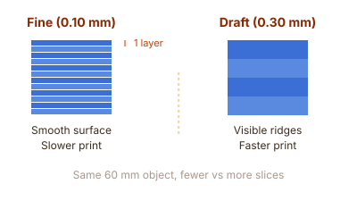
Layer Height
Controls how thick each slice is. Thinner layers can improve detail but take longer; thicker layers can save time but show more ridges. For a 0.4 mm nozzle, 0.20 mm is a useful comparison point. Around 75–80% of nozzle diameter (0.30–0.32 mm) is a common conservative upper guideline, not a universal machine limit. The SKETCH Large lists 0.10–0.40 mm layer resolution; print only at heights available in its approved profile and check the result.
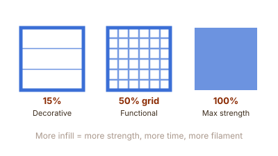
Infill Density & Pattern
Infill is the internal structure that fills the model. 0% = hollow (vases, decorative). 10–20% = light prints, enough for most decorative parts. 40–60% = functional parts with moderate load. 80–100% = more material and time; useful when testing shows a need. Common patterns: Grid, Gyroid (connected 3D structure), Lightning (minimal but fast).
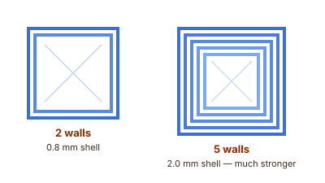
Wall Count (Perimeters)
The number of shells that form the outer surface of the print. 2 walls = fast, thin, fragile. 3–4 walls = standard for functional parts. 5+ walls = very strong, less infill needed, excellent for mechanical parts. Wall thickness = wall count × nozzle diameter (0.4 mm nozzle × 3 walls = 1.2 mm shell).
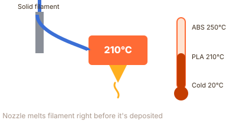
Print Temperature
Higher temperature = better layer adhesion, less risk of clogs, slightly more stringing. Lower temperature = less stringing, better detail on bridges but possible delamination. Always stay within the filament manufacturer's range. PLA: 195–220 °C. PETG: 230–250 °C. ABS: 230–250 °C. TPU: 220–240 °C.
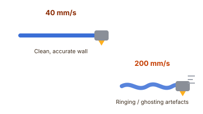
Print Speed
Print speed is one part of the time and quality tradeoff. Acceleration, extrusion flow, cooling, and the model's shape also matter; a higher speed setting may not shorten a small print much. Outer walls may use a slower profile than infill. Use the classroom printer's approved profile rather than another machine's headline speed.
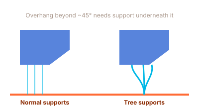
Supports
Unsupported overhang limits vary with material, cooling, geometry, and profile; 45° is a starting guideline, not a fixed cutoff. Normal supports grow from the build plate up. Everywhere supports also grow from the model. Tree supports branch toward contact points and may use less material on some models. Supports must be removed after printing, so minimise them by rotating the model so overhangs face down or eliminating them through design.
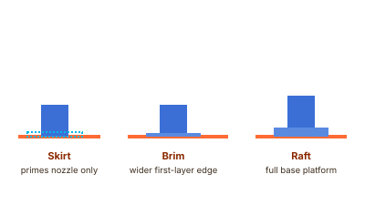
Bed Adhesion
Skirt: a ring around the print to prime the nozzle — no adhesion. Brim: extra lines attached to the first layer edge — great for tall narrow parts. Raft: a full base platform the print sits on — used for very warpy materials (ABS, ASA) or complex first-layer geometries. Most PLA prints need only a skirt or no adhesion aid.
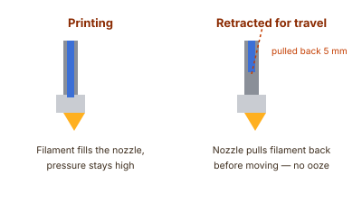
Retraction
When the nozzle travels over empty space, it pulls the filament back slightly to prevent stringing. Direct drive: 0.5–2 mm retraction. Bowden: 4–7 mm. Too much retraction can grind or jam the filament; too little leaves threads between parts. Higher temperature = worse stringing = needs more retraction.
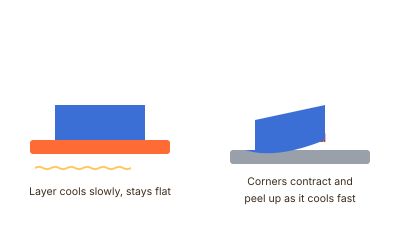
Bed Temperature
Keeps the first layer warm to prevent warping. PLA: 55–65 °C. PETG: 70–85 °C. ABS/ASA: 90–110 °C (needs enclosure). TPU: 40–60 °C. No heated bed = PLA only and small prints. Mismatched bed temp is the #1 cause of prints popping off mid-print.
Special Protocol · Moving Parts & Print-in-Place
Print-in-Place Mechanisms: The Wheel & Axle Slicer Rules
When an object has moving parts that stay together — such as a captive wheel on an axle, a rolling creature tool, or a captured hinge — standard slicer defaults will ruin the print. A slicer configured for static brackets will try to fill bearing gaps with supports and bridge wheels to chassis with brims. Students must write down, verify, and defend these exact slicer settings before submitting their print job:

1. Supports: OFF (or Support Blockers)
The Failure Mode: If automatic supports are enabled, the slicer generates support filament inside the 0.4 mm cylindrical air gap between the axle shaft and the wheel hub. Once cooled, this plastic permanently welds the moving wheel to the axle into an unmovable lump.
The Setting: Turn supports OFF entirely, or place a manual Support Blocker cylinder over the axle journal. To hold itself up without supports, the axle must be designed with 45° conical retaining flanges and base chamfers.
2. Bed Adhesion: SKIRT ONLY (NO BRIM)
The Failure Mode: A standard brim draws concentric rings around every part touching the build plate on Layer 1. Because the wheel rim and chassis axle are separated by only 0.4 mm, the brim bridges across the gap, cementing the wheel directly to the stationary frame on the very first layer.
The Setting: Select Skirt (1–2 loops, 4–5 mm offset from the part) to prime the nozzle. If bed adhesion is poor on a large chassis, use a Raft (which introduces an intentional vertical air gap) or set Brim-Object Gap to ≥0.4 mm.
3. Shell Thickness / Wall Count: 3 to 4 Perimeters
The Failure Mode: The default 2 walls (0.8 mm) leave small cylindrical axles hollow inside with weak infill. When downward pressure is applied to a rolling tool, bending and shear stress concentrate at the axle root, causing the shaft to snap along layer lines.
The Setting: Set Wall Count to 3 or 4 perimeters (1.2 mm to 1.6 mm shell thickness). For an 8 mm axle printed with a 0.4 mm nozzle, 4 concentric wall loops ensure the axle shaft is 100% solid plastic, multiplying its shear strength.
4. Infill: 25%–35% Gyroid or Cubic
The Failure Mode: Standard grid or lines infill has directional weak axes that collapse when downward force is applied across the rolling wheels.
The Setting: Choose Gyroid or Cubic at 25%–35% density. Gyroid infill provides isotropic (uniform in all 3D directions) mechanical resistance, preventing the creature or tool chassis from deforming under hand pressure.
5. Layer Height: 0.16 mm – 0.20 mm
The Failure Mode: Coarse layer heights (0.28–0.32 mm) produce prominent stairstep ridges inside circular bores, creating extreme mechanical friction against the axle and catching during rotation.
The Setting: Use 0.16 mm (fine) or 0.20 mm (standard). Thinner layers yield smooth bearing contact surfaces and allow clean bridging across 45° overhang chamfers.
6. Elephant's Foot Compensation: -0.15 mm
The Failure Mode: First-layer thermal expansion and bed squish cause the bottom layers of plastic to bulge outward, bridging the narrow 0.4 mm gap at the build plate.
The Setting: Set Initial Layer Horizontal Expansion to -0.15 mm in the slicer, and model a 45° base chamfer (≥1.0 mm) at the bottom of the wheel hub and axle boss.
Student Print-in-Place Specification Worksheet
Fill out and verify this record before sending your print to the classroom queue:
| Parameter | Target Value | Student Slicer Value | Engineering Justification | Check |
|---|---|---|---|---|
| Supports | OFF / Blockers | [ ] | Prevents support filament from welding the 0.4 mm axle journal shut. | □ |
| Build Plate Adhesion | Skirt (never Brim) | [ ] | Prevents brim lines from connecting wheel to chassis on Layer 1. | □ |
| Wall Count (Shell) | 3 to 4 walls (≥1.2 mm) | [ ] | Ensures axle shaft is solid concentric plastic to resist rolling shear. | □ |
| Infill Density & Pattern | 25%–35% Gyroid | [ ] | Isotropic strength against downward tool pressure. | □ |
| Layer Height | 0.16 mm – 0.20 mm | [ ] | Smooth journal contact surface; minimizes bearing friction. | □ |
| Radial Clearance | 0.35 mm – 0.50 mm | [ ] | Calibrated via Clearance Comb; exceeds printer line width. | □ |
| Initial Layer Expansion | -0.15 mm / 45° bevel | [ ] | Compensates for elephant's foot squish at build plate. | □ |
Ready to test in The Forge? Experiment with scalable parameters in the browser: Captive Wheel & Axle Template · Rolling Creature Tool Template · ← Back to 3D Design Pathway
04 — First Layer Tramming, Z-Offset & Bed Prep
The Critical First 0.2 Millimeters
First-layer problems are a common cause of failed prints. If the first layer does not adhere, the part can warp, slide, or knock loose. A nozzle that is too close can scrape the bed or spoil the surface. Check the first layer, bed preparation, and the calibration steps supported by your specific printer; ask the teacher before changing machine settings.
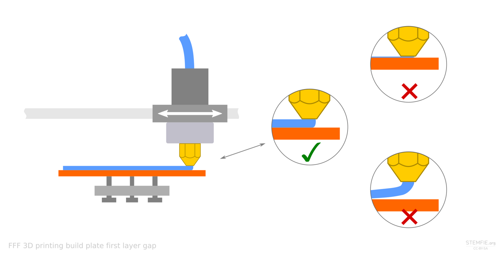
Dialing the Z-Offset (Baby-Stepping)
The Z-offset is the digital distance offset between the machine's homing sensor (probe or endstop) and the actual nozzle tip. While the print is putting down its perimeter skirt or brim, watch the bead under direct raking light. Use the printer's screen to tune "Live Z" or "Baby-step Z" in increments of 0.02 mm until the individual extrusions flatten together without bulging into rough furrows.
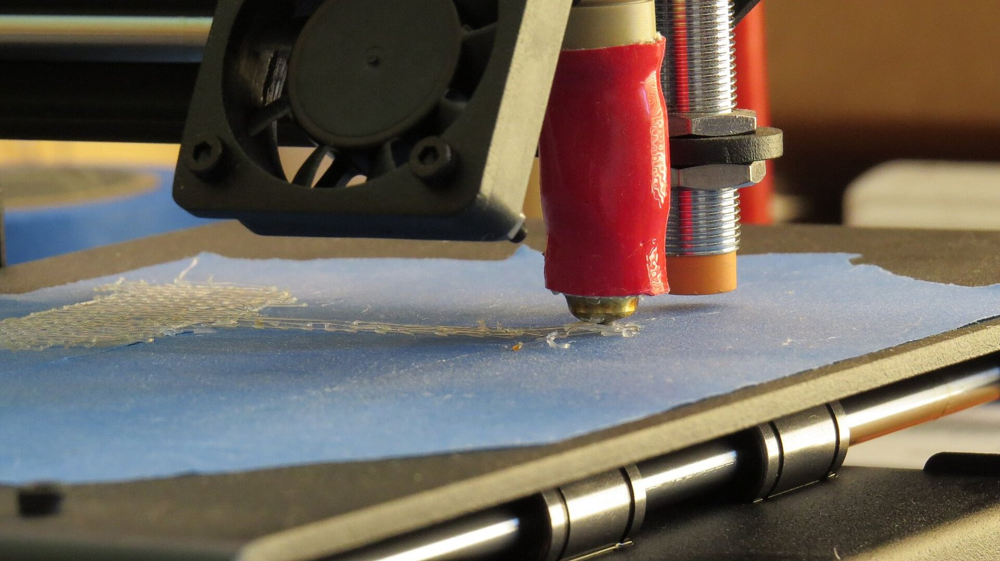
Bed Tramming: The 0.1 mm Paper Test
On printers with adjustable bed screws, tramming aligns the bed with the printhead's travel. A paper-gap check can be a starting method on those machines, but paper thickness and the correct procedure vary. Follow the printer's own calibration instructions; the SKETCH Large has no corner screws to turn: it sets nozzle height with a paper test under Settings → Utilities → Calibration (see the Operator's Manual below).
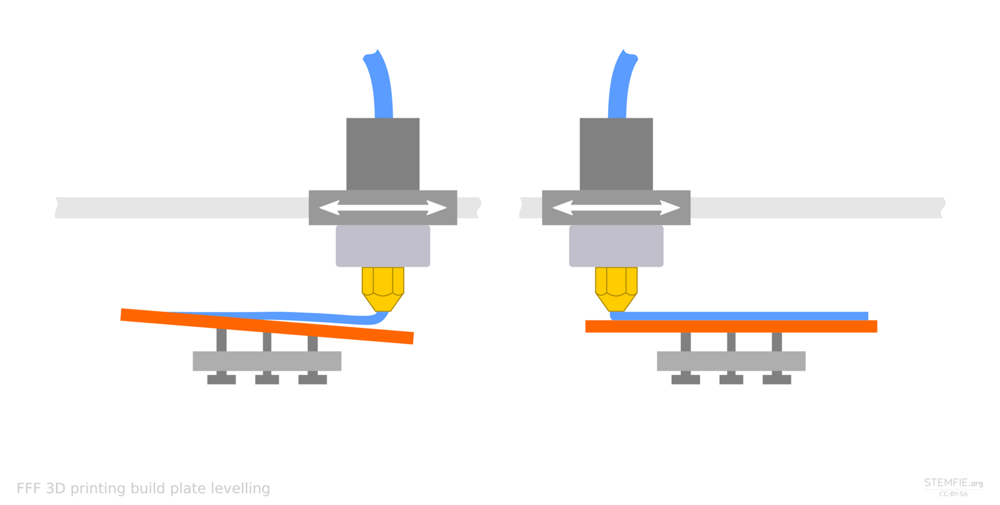
Bed Chemistry: Soap vs. Alcohol
Fingerprints contain sebum oils that ruin polymer adhesion. While 99% Isopropyl Alcohol (IPA) is great for wiping dust between prints, alcohol only dissolves finger grease and smears a microscopically thin film across the plate. Once every 1–2 weeks, remove the spring-steel PEI sheet and scrub thoroughly in the sink with warm water and basic dish soap (surfactant), then dry with a clean paper towel. When printing PETG or TPU on smooth PEI, use a thin glue stick layer as a release barrier—these materials adhere so strongly they can otherwise tear PEI or glass apart!
05 — Design for the Process: Elephant's Foot, Holes & Seams
Bridging CAD Models with Physical Physics
CAD software assumes infinite rigidity, zero gravity, and mathematically perfect geometry. FDM 3D printing deposits hot, semi-liquid plastic under gravity that shrinks as it solidifies. Understanding these three mechanical realities allows you to design parts that fit together on the very first print.
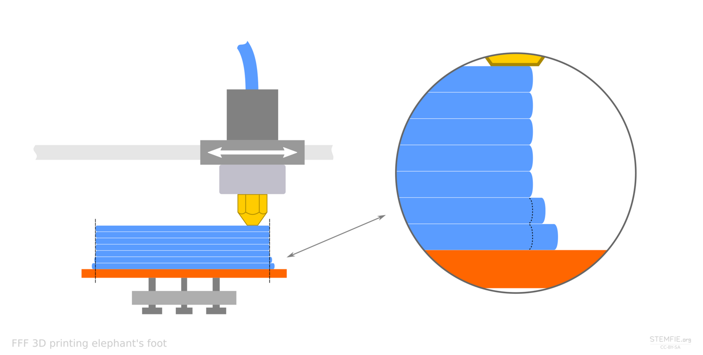
The Elephant's Foot Remedy
When the first layer is squished for adhesion and kept warm by the heated bed, the bottom 1–2 mm bulges outward. This ruins mating tolerances and snap-fits. To eliminate it in CAD, add a 0.5 mm to 1.0 mm × 45° chamfer around all bottom edges touching the bed. In your slicer, tune Elephant Foot Compensation (or Initial Layer Horizontal Expansion = -0.15 mm) to contract the first layer's outer perimeter inwards.
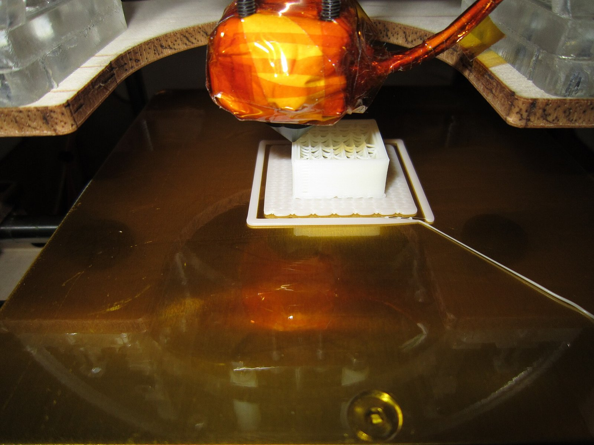
Why Vertical Holes Shrink
If you design a 5.0 mm hole in CAD for an M5 bolt, it will print at roughly 4.7 mm and the bolt won't fit! Three physical factors cause internal hole shrinkage: (1) STL export tessellates circles into straight polygon chords, cutting off the circumference, (2) nozzle radius rounds inside sharp corners, and (3) surface tension and extrusion dragging pull molten plastic toward the center of the arc. Rule of thumb: add +0.2 mm to +0.4 mm to holes in CAD, or use the slicer setting X-Y Hole Compensation = +0.15 mm.
The Z-Seam: Hiding the Start Point
Every closed perimeter path must start and stop somewhere. At that brief transition, pressure in the hotend drops or momentarily pauses, leaving a tiny visible bump or gap known as the Z-seam. Slicers offer four ways to manage it:
- Sharpest Corner: (Recommended) Hides the seam inside concave or convex geometric corners where the eye doesn't notice it.
- Aligned / Rear: Stacks the seams in a neat vertical line on the back of the part.
- Random: Scatters start points across the perimeter. This avoids a visible vertical ridge but creates a speckled or "orange-peel" surface texture.
- Paint-on Seam: Modern slicers allow you to manually paint where seams may or may not be placed on complex curves.
06 — Infill Architecture & Mechanical Assembly
Interior Structure & Threaded Inserts
A 3D print is an engineered composite: solid perimeter walls form an exterior skin, while internal infill stabilizes top layers and distributes mechanical stress. When building functional assemblies, combining smart infill geometry with brass heat-set inserts yields parts that match injection-molded durability.
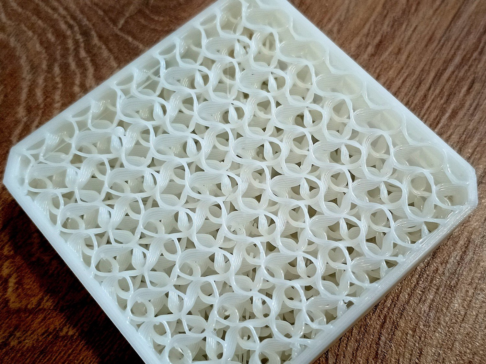
Gyroid vs. Grid Infill
Grid infill uses straight crossing lines; raised crossings can occasionally catch a nozzle. Gyroid infill follows a curved 3D pattern without same-layer line crossings. Its geometry can distribute loads through several directions, but the complete printed part still depends on layer bonding, walls, orientation, and the applied load. Compare physical samples before claiming a strength advantage.
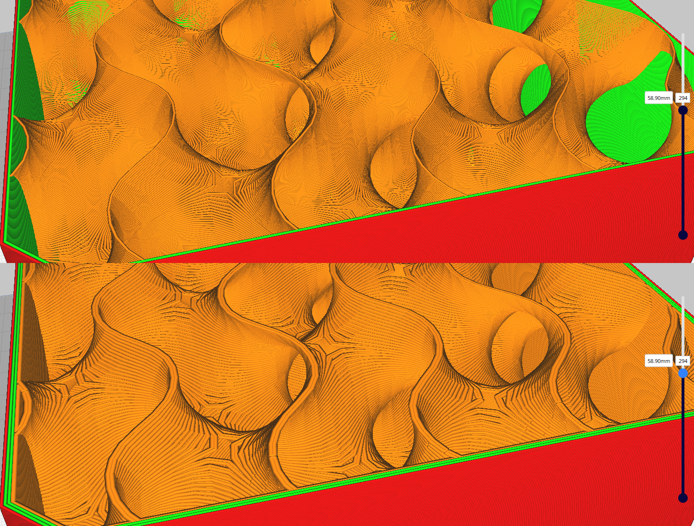
Lightning Infill for Display Models
For some non-load-bearing display prints, dense internal infill adds time and material without much benefit. Lightning infill generates branching tree-like internal scaffolding that only grows directly beneath roof surfaces where solid top layers need support. It leaves the lower body virtually hollow, sometimes reducing print time and filament use; compare the slicer's estimates for your model.
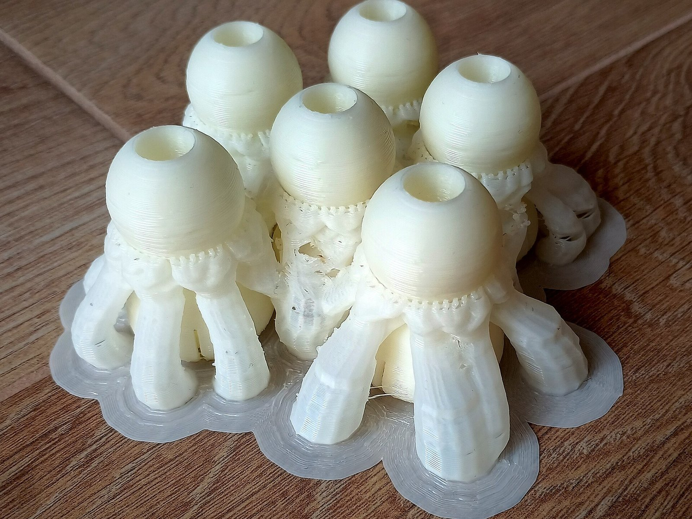
Tree Supports vs. Linear Blocks
Traditional linear/normal supports build dense vertical pillars from the bed directly upward. Tree / organic supports grow like branches around the model, reaching inward to touch overhangs only where needed. Tree supports can use less filament and leave different contact marks than conventional supports; compare both in the preview and remove them with approved tools.
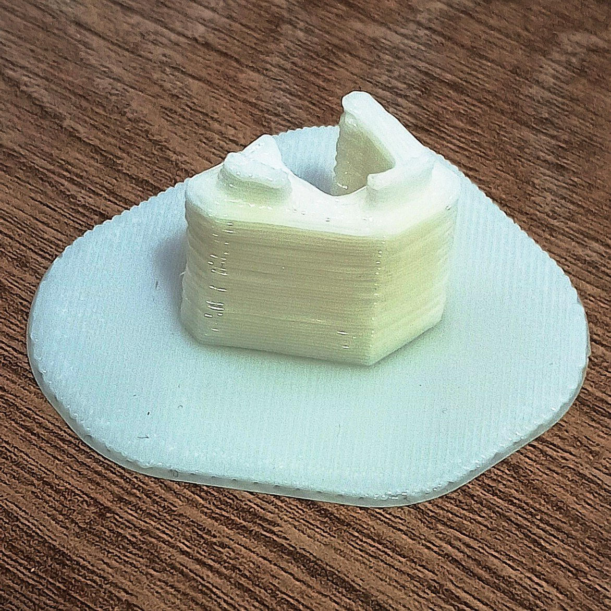
Fastening: Heat-Set Threaded Inserts
Tapping screw threads directly into 3D printed plastic is fragile: repeated tightening strips the soft plastic, and tensile forces pry layer lines apart. The industry standard solution is brass heat-set threaded inserts (M3/M4):
- Design a cylindrical hole in CAD with a slight 1°–2° draft angle, sized according to the insert datasheet (e.g. 4.0 mm diameter for an M3 insert).
- Place the brass insert on top of the hole. Press a clean soldering iron tip set to 210–230 °C gently into the insert.
- The brass heats, melting the surrounding polymer. The insert sinks flush into the hole as molten plastic flows into the diagonal knurls.
- Once cooled, the brass insert is permanently locked in place, capable of holding steel machine screws under tens of kilograms of pull-out force!
07 — Machine Kinematics, Nozzle Engineering & Lab Safety
Motion Systems, Extrusion Physics & Lab Protocols
A 3D printer is a computer-controlled CNC robot operating at temperatures that can melt aluminum and emit ultrafine particles. Understanding your machine's motion architecture, nozzle thermodynamics, and safety systems ensures reliable production and a safe shop environment.
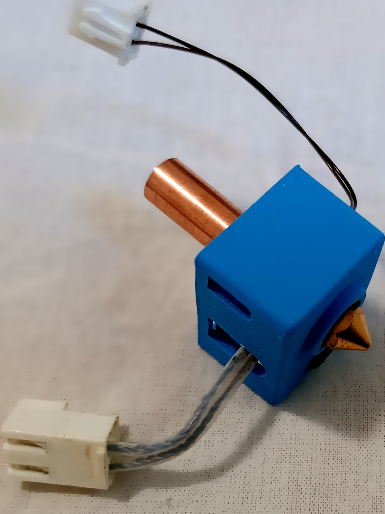
Hotend Thermal Zones & Heat Creep
A hotend must maintain a razor-sharp boundary between its cold zone (where filament remains solid and rigid) and its hot zone (where filament melts into a liquid). If heat conducts upwards past the heatbreak—known as heat creep—filament softens inside the cold heatsink, expands, and forms an immovable plug. Always ensure the dedicated hotend heatsink fan runs continuously whenever temperature exceeds 50 °C.
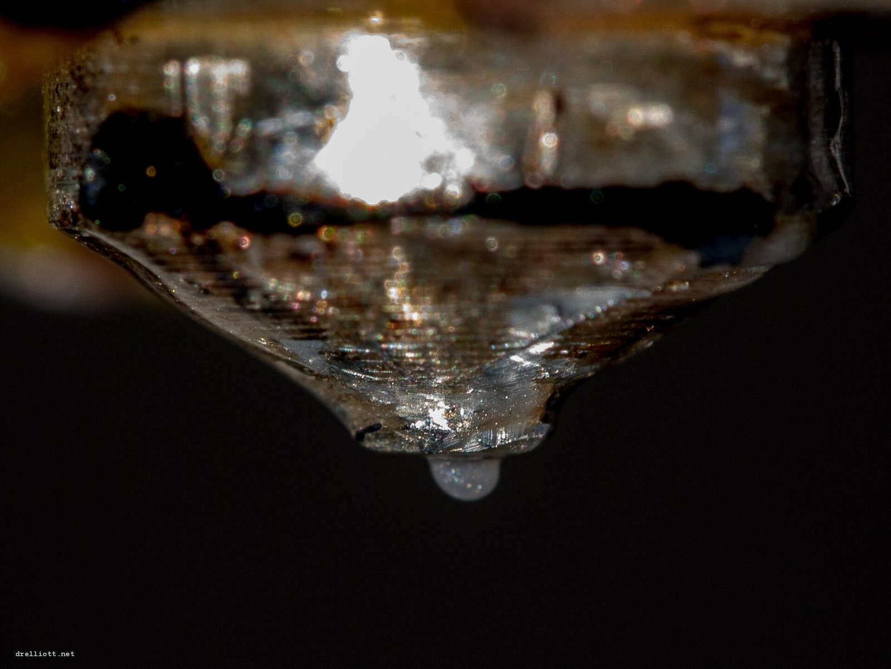
Nozzle Sizes & Abrasive Filaments
0.4 mm is the universal baseline nozzle. A 0.2 mm nozzle creates stunning micro-detail and legible 2 mm text, but increases print time by 300%. A 0.6 mm or 0.8 mm nozzle doubles wall thickness in a single pass, slashing print time and creating nearly indestructible layer bonds.
Warning: Standard brass nozzles are soft. Composite filaments like carbon-fiber, glow-in-the-dark (strontium aluminate), and wood/metal fill act like liquid sandpaper, enlarging a 0.4 mm brass hole to 0.7 mm in just one spool! Abrasive filaments require hardened steel or tungsten carbide nozzles.
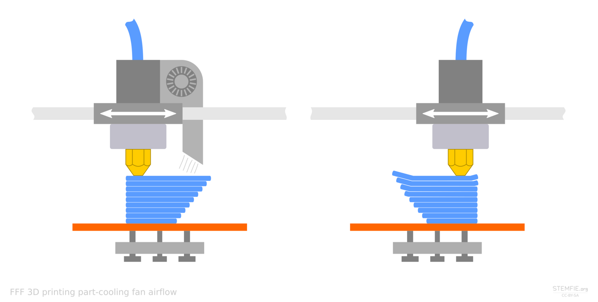
Kinematics: Bed-Slinger vs. CoreXY
Many Cartesian printers move the bed along Y; some CoreXY designs keep the bed still in X and Y while the toolhead moves. Bed motion can affect a tall part at high acceleration, but frame stiffness, tuning, material, and geometry also matter. CoreXY geometry alone does not guarantee a particular speed or eliminate wobble. Compare the approved profiles and actual print quality of the machines available to you.
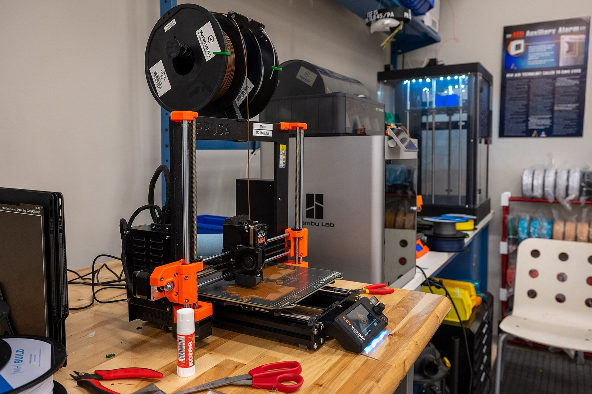
Air Quality & Thermal Runaway Failsafes
Emissions: Molten polymers emit Ultrafine Particles (UFPs < 100 nm) and Volatile Organic Compounds (VOCs). PLA emits lactide vapors and moderate UFPs. ABS and ASA emit significant styrene—a known respiratory irritant and neurotoxin. Enclosures do not clean air on their own: printers must use HEPA filtration (for particles) + activated carbon (for VOCs) or ducted outdoor exhausts.
Thermal Runaway: If a thermistor wire breaks or falls out of the heater block, the sensor reads room temperature (~20 °C) while the heater cartridge continues pumping maximum power. Modern firmware includes Thermal Runaway Protection: if power is applied and temperature does not rise predictably within 20 seconds, the printer halts immediately to prevent a fire.
08 — The Rules for a Perfect Print
12 Golden Rules Every Maker Follows
First layer = everything
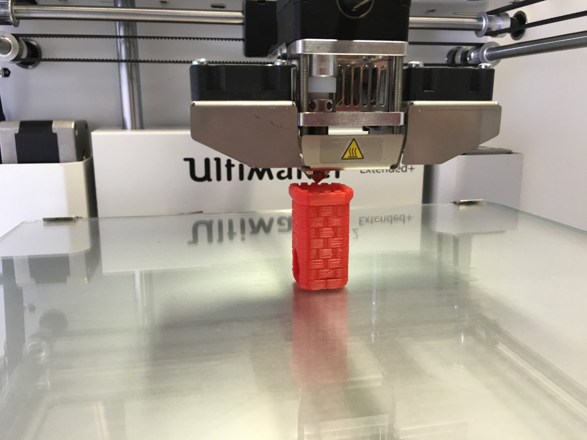
Inspect bed contact as printing begins. Follow the approved preparation and calibration steps for this printer; a sound first layer reduces detachment risk but does not prevent every failure.
Dry your filament
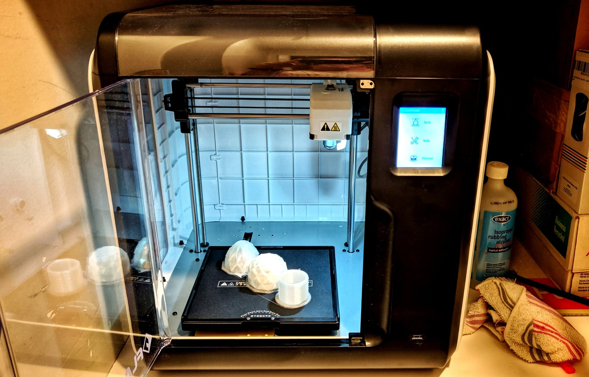
Wet filament pops, bubbles, and strings. Store in sealed containers with silica gel. Moisture sensitivity varies by filament. Follow the filament manufacturer’s drying temperature and time, using approved equipment.
Orient for strength
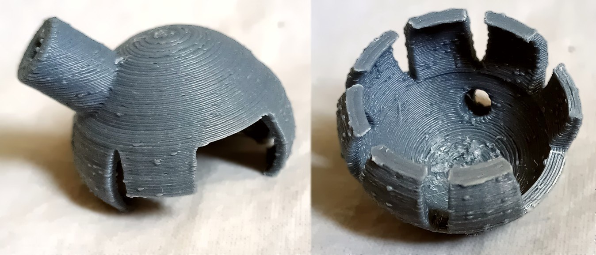
FDM parts are weakest in the Z direction. Orient models so load runs along the XY layer plane. A rod loaded in tension along its length often benefits from lying flat; test your intended load.
Rotate before adding supports
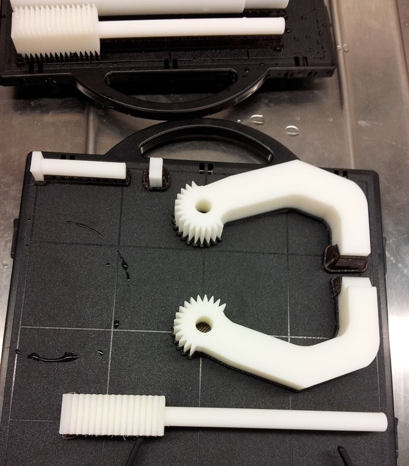
A rotation can put a flat face on the bed and sometimes remove support regions. Compare bed contact, strength direction, surface marks, time, and material before choosing.
Calibrate before you create
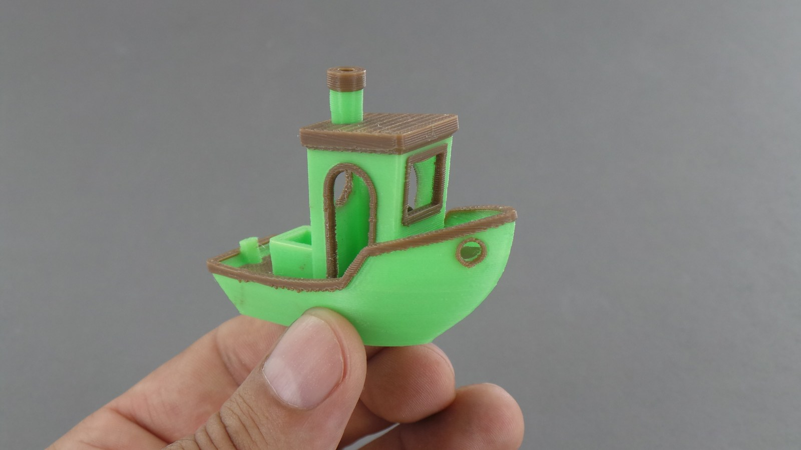
Start with the approved printer and material profile. If a result needs tuning, ask the teacher which calibration test is appropriate, then change one setting and record the result.
Walls beat infill for strength
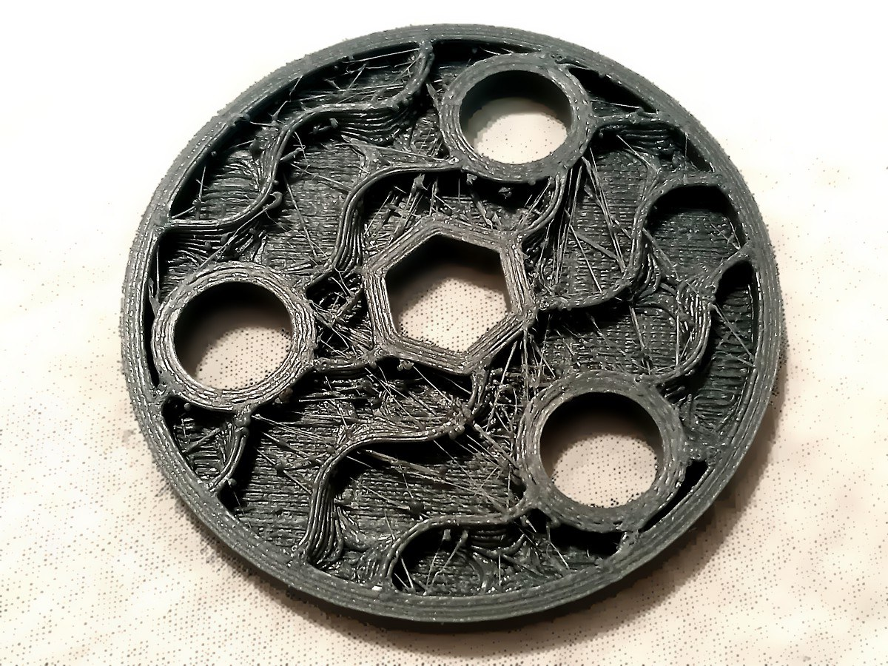
Extra wall perimeters increase part strength more efficiently than raising infill density. Compare walls and infill with a test piece loaded in the intended direction.
Test bridges before committing
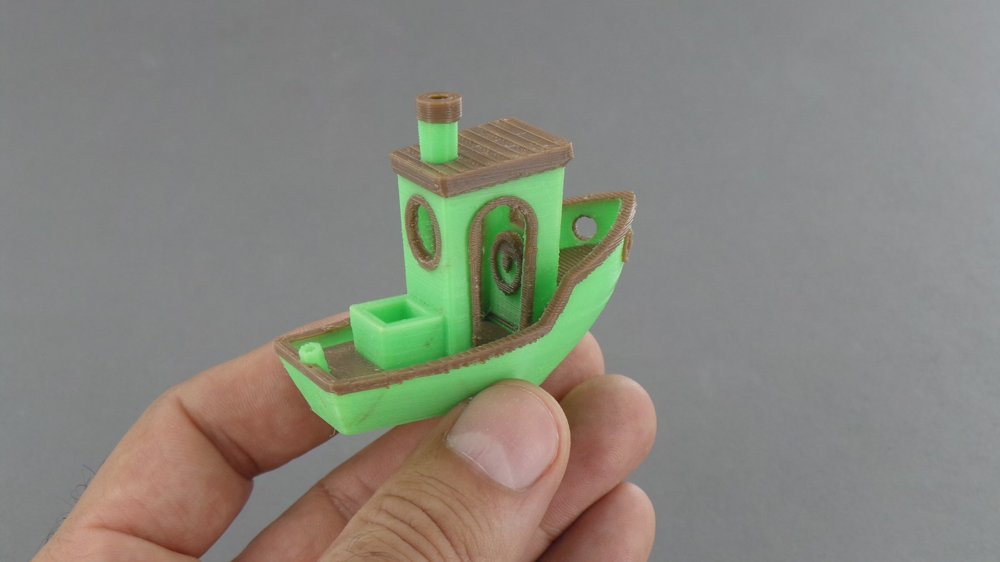
Bridge capability varies with material, geometry, cooling, and speed. Use a short test before choosing supports or redesigning. Print a bridge test before your final print.
Change one variable at a time
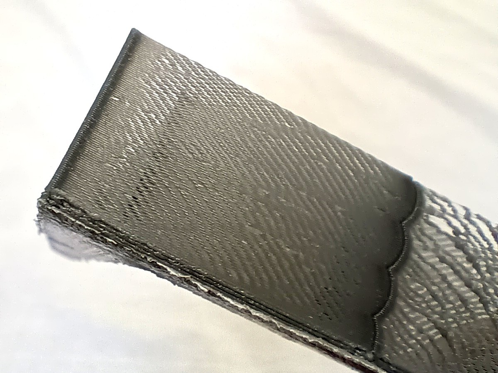
When debugging, only change one setting per test print. Changing temperature, speed, and retraction simultaneously makes it impossible to know what actually fixed it.
Watch the first 3 layers live
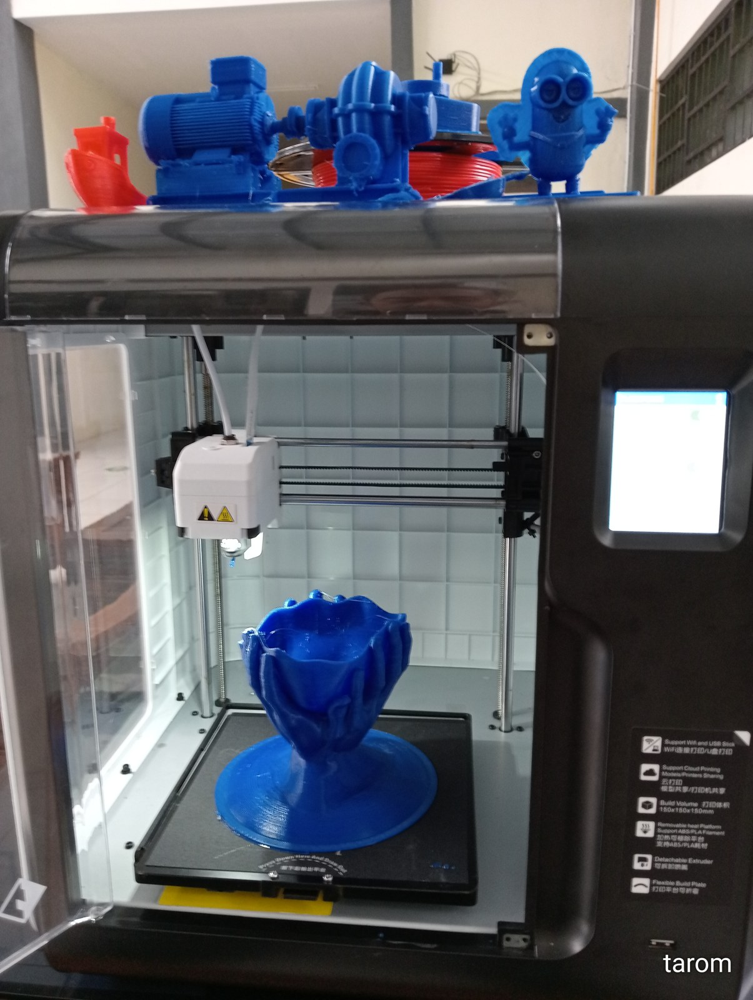
Stay at the printer for the first 3 layers. If you see lifting, stringing, or the nozzle gouging the bed, stop immediately. Failures caught early cost minutes; left alone they cost hours.
Design for the process
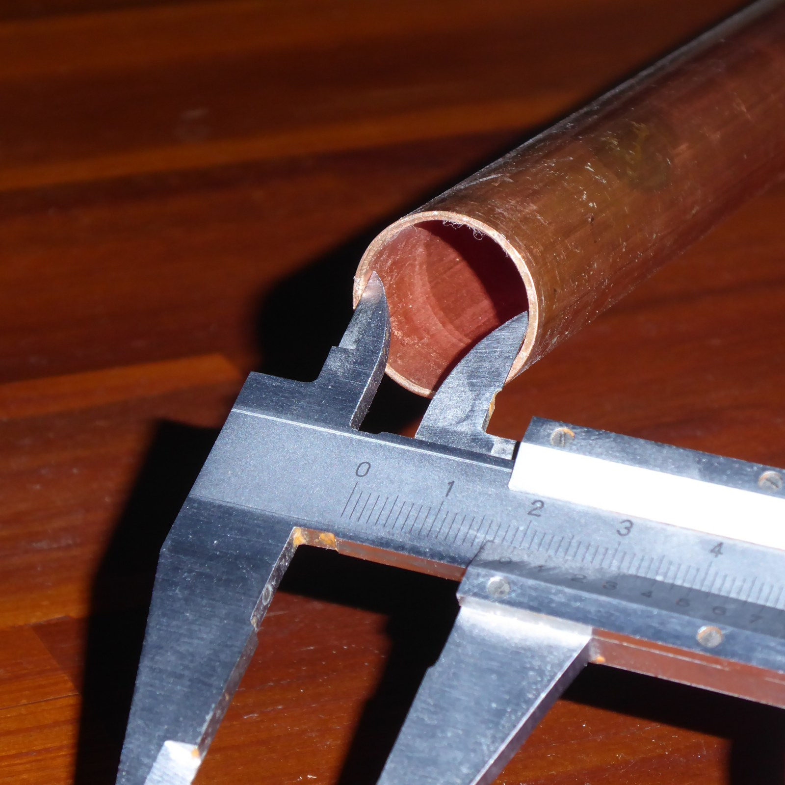
Start with 1.2 mm walls for this 0.4 mm example. Small holes and mating parts need a fit coupon; try 0.2 mm clearance, then measure and adjust. Chamfer or fillet edges to reduce stress concentration at layer lines.
Post-process when it matters
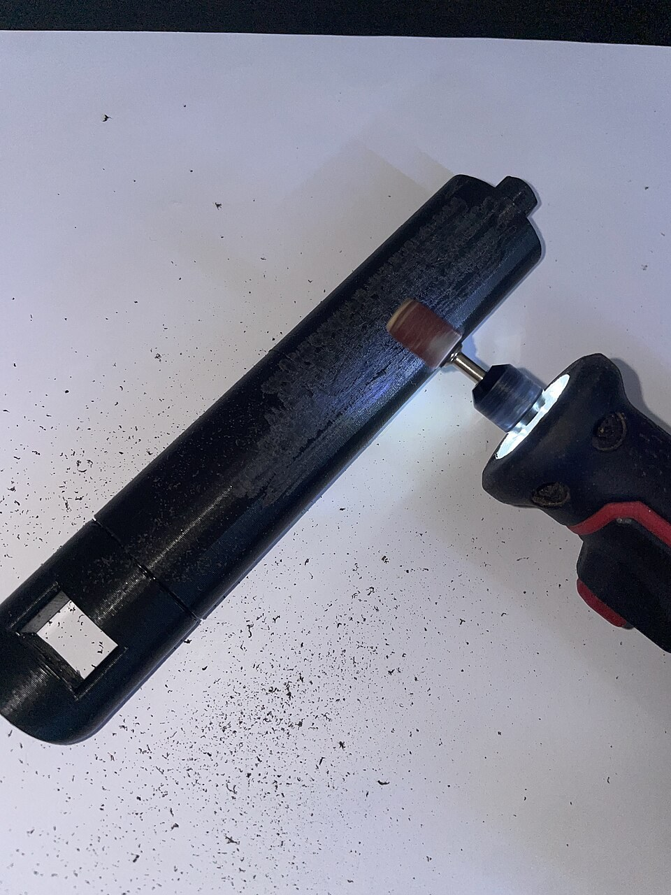
Sand through 120→220→400 grit, prime, then paint. Heat treatment can distort parts. Solvents and coatings require separate trained-adult procedures; use teacher-approved finishing only.
Save every slicer profile
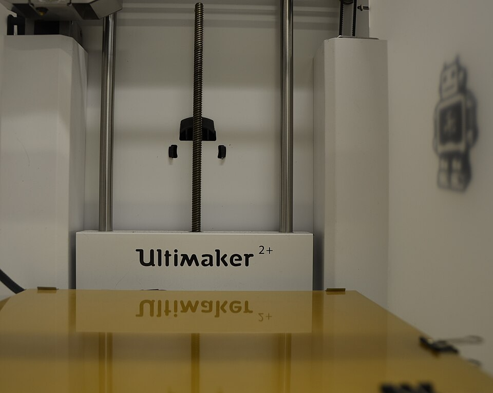
Label profiles clearly — e.g. "PLA Draft 0.3 mm Bambu P1S" or "PETG Functional 0.2 mm Fine". Slicer settings are too nuanced to recreate from memory.
09 — Print Scenario Guide
What Settings Fit Your Situation?
Compare goals and tradeoffs with these illustrative settings. They are not SKETCH Large presets. For a classroom print, select an approved MakerBot PLA or Tough profile, inspect its actual settings, and change one variable only with teacher approval. PETG, ABS, ASA, TPU, Silk PLA, nylon, and resin examples describe other machines and processes.
🚀 Quick Prototype Settings
| Setting | Value | Why |
|---|---|---|
| Layer Height | 0.20–0.30 mm | Compare a coarser approved profile with the 0.20 mm baseline; 0.40 mm is machine-specific, not a default |
| Infill | 10–15% | Just enough to hold the shell together; saves time |
| Walls | 2 | Minimum walls — fit testing only |
| Print Speed | Use approved draft profile | Compare the slicer's estimate and finished quality; speed depends on the printer and material |
| Supports | None or minimal | Speed — accept some overhang sag for prototyping |
| Material | PLA | Easiest, no enclosure, fast cool-down |
| Top/Bottom Layers | 2 | Reduces time; appearance unimportant |
🏆 Display / Figurine Settings
| Setting | Value | Why |
|---|---|---|
| Layer Height | 0.08–0.12 mm | Ultra-fine layers = near-smooth surface; less sanding needed |
| Infill | 15% | Display parts aren't load-bearing; save weight & time |
| Walls | 4–5 | Thick shell prevents infill pattern telegraphing to surface |
| Print Speed | 30–50 mm/s | Slow = minimal vibration artefacts on outer walls |
| Cooling | 100% | Maximum cooling snaps layers sharp for fine detail |
| Supports | Only where needed | Compare supported areas and contact marks in the slicer; tree supports may be unavailable |
| Material | Approved PLA | Use the classroom PLA profile; specialty finishes need separate compatibility approval |
🔩 Functional / Mechanical Part Settings
| Setting | Value | Why |
|---|---|---|
| Layer Height | 0.20 mm | Good layer adhesion without excessive print time |
| Infill | 40–60% | Enough internal material to resist compression and impact |
| Walls | 5–8 | Extra walls can help; test the intended load and orientation |
| Infill Pattern | Compare available patterns | Pattern affects internal support, but layer bonds and orientation keep a printed part direction-dependent |
| Print Speed | 40–60 mm/s | Moderate speed maintains strong layer-to-layer bonding |
| Top/Bottom Layers | 5–6 | Thick top/bottom caps prevent surface flexing under load |
| Material | Approved Tough or PLA | Test fit and load with classroom material; PETG and ABS require a compatible, separately approved printer |
🧤 Flexible / Wearable Settings
| Setting | Value | Why |
|---|---|---|
| Material | TPU 95A or 87A | Shore A = hardness rating; lower number = softer/more elastic |
| Layer Height | 0.20–0.28 mm | Thicker layers bond better in flexible materials |
| Infill | 20–35% | Too much infill makes the part stiff — tune to the flex level required |
| Print Speed | 20–35 mm/s | TPU buckles and jams if printed fast — go slow |
| Retraction | 0–2 mm | Minimal retraction only — TPU buckles in Bowden tubes |
| Walls | 3–4 | Enough shell to maintain shape while still allowing flex |
| Cooling | 50–70% | Too much cooling causes TPU to delaminate between layers |
☀️ Outdoor / UV-Exposed Settings
| Setting | Value | Why |
|---|---|---|
| Material | ASA or PETG | ASA = UV stable + weather resistant. PETG = moisture resistant. Outdoor life depends on the specific formulation, heat, and exposure. |
| Layer Height | 0.20 mm | Standard balance; outdoor parts prioritise strength over fine detail |
| Infill | 30–50% | Outdoor parts may face wind, impact, or load-bearing use |
| Walls | 4–5 | Thick walls reduce moisture ingress and improve UV resistance |
| Bed Temp | 90–110 °C | ASA needs high bed temp plus an enclosure to prevent warping |
| Enclosure | Required for ASA | ASA warps aggressively in open-air with any temperature draft |
| Post-Process | UV-resistant clear coat | Even ASA benefits from a UV-stabilised top coat for extended outdoor life |
🏺 Vase / Hollow Container Settings
| Setting | Value | Why |
|---|---|---|
| Mode | Spiralise / Vase Mode | One continuous spiral path — reduces repeated layer seams; thin walls and watertightness need testing |
| Layer Height | 0.15–0.25 mm | Thinner layers = smoother; the spiral amplifies any layer-line texture |
| Wall Width | 0.6–1.2 mm | Wider than normal — single-wall prints need more width for strength |
| Bottom Layers | 3–5 solid layers | Solid base before the spiral begins so the vase can hold contents |
| Speed | 40–60 mm/s | Consistent extrusion rate prevents thin/thick banding in the spiral |
| Material | PLA or Silk PLA | Silk PLA in Vase Mode catches light with a spectacular metallic sheen |
| Supports | Usually none | Check the preview: a compatible, self-supporting contour is required |
10 — Materials Reference
Choosing the Right Filament
Classroom choice: use only the teacher-approved MakerBot PLA or Tough profile for the SKETCH Large. The other materials below are comparisons for compatible printers, not a progression to try on this machine. Temperature ranges vary by manufacturer and formulation; use the material's verified profile for real work. Resin uses a different printing process.
| Material | Nozzle °C | Bed °C | Enclosure | Strengths | Weaknesses | Difficulty |
|---|---|---|---|---|---|---|
| PLA | 195–220 | 55–65 | No | Easy to print, sharp details, low warp | Brittle at impact, low heat resistance (~60 °C), UV-degrades | Beginner |
| PETG | 230–250 | 70–85 | No | Often tougher and more flexible than standard PLA; good layer adhesion | Strings badly, absorbs moisture, slightly tricky bed adhesion | Intermediate |
| ABS | 230–250 | 100–110 | Yes | Tough, acetone-smoothable, heat resistant (~100 °C), widely used industrially | Warps aggressively, fumes require ventilation, hard to print | Advanced |
| ASA | 240–260 | 90–110 | Yes | UV stable, weather resistant, similar toughness to ABS | Warps, requires enclosure, fumes, more expensive than ABS | Advanced |
| TPU | 220–240 | 40–60 | No | Flexible, durable, impact-resistant, wearable | Slow print speed needed, Bowden extruder problems, strings | Intermediate |
| Nylon (PA) | 250–270 | 70–90 | Recommended | High strength, fatigue-resistant, slightly flexible | Highly hygroscopic (must be dry), warps, expensive | Advanced |
| Resin (MSLA) | N/A | N/A | Ventilation | Fine detail and smooth surfaces on a compatible resin printer | Toxic uncured, brittle, small build volume, post-wash needed | Advanced |
11 — Troubleshooting Common Failures
What Went Wrong & How to Fix It
Each card shows the visual signature of the failure, its root cause, and the slicer or hardware fix. When you encounter a bad print, match it to a card.
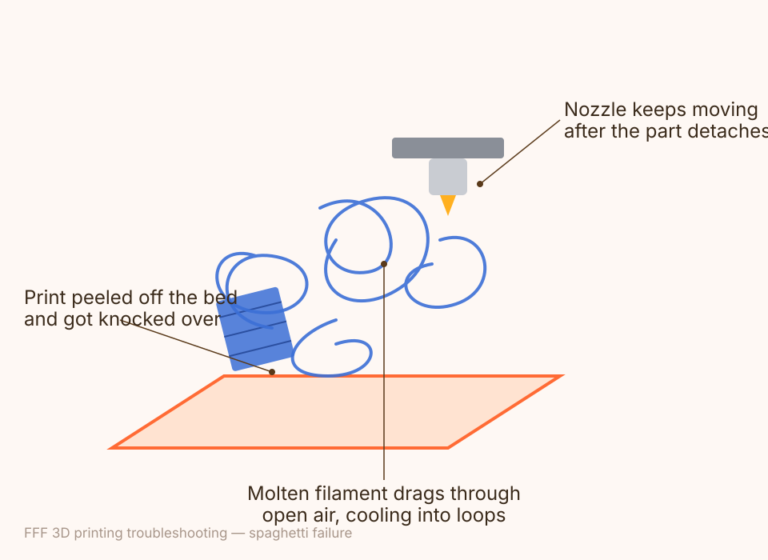
from a detached print
Spaghetti / Knocking
Print detached from the bed mid-print. The nozzle knocks over the loose part and drags molten filament through the air in loops, building a bird's-nest of plastic.
Increase bed adhesion (brim, higher bed temp, glue stick). Re-level the bed. Reduce first-layer speed to 20–30 mm/s. Clean the bed surface with isopropyl alcohol before every print.
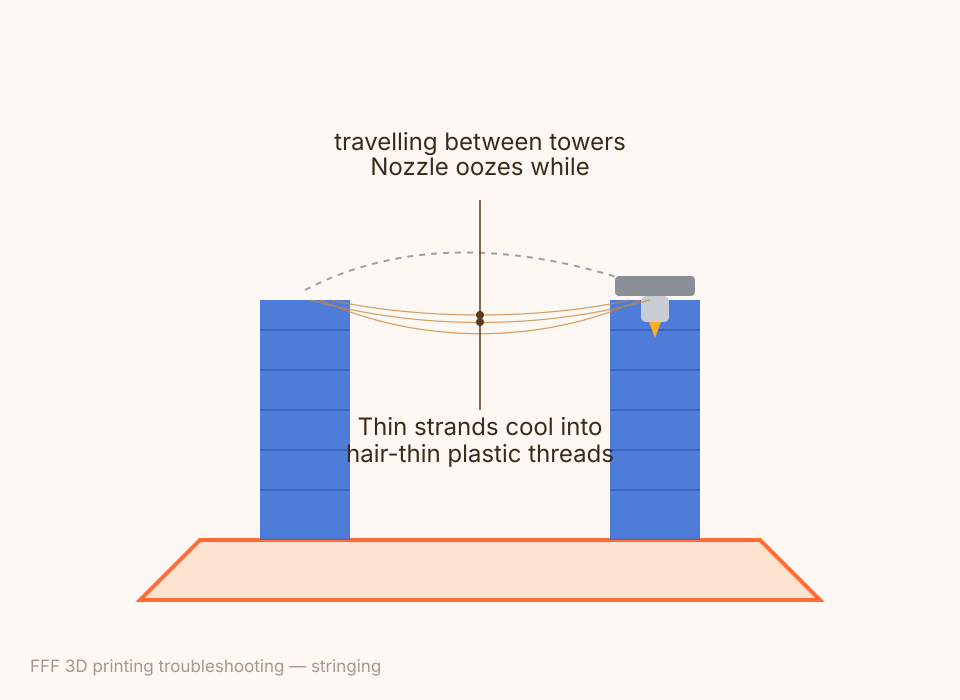
spanning open gaps
Stringing / Cobwebs
Molten plastic oozes from the nozzle during travel moves across open air. This leaves hair-thin threads connecting separate parts of the print.
Increase retraction distance/speed. Reduce nozzle temperature by 5 °C. Enable combing (travel inside the model). Dry the filament — moisture dramatically increases stringing.
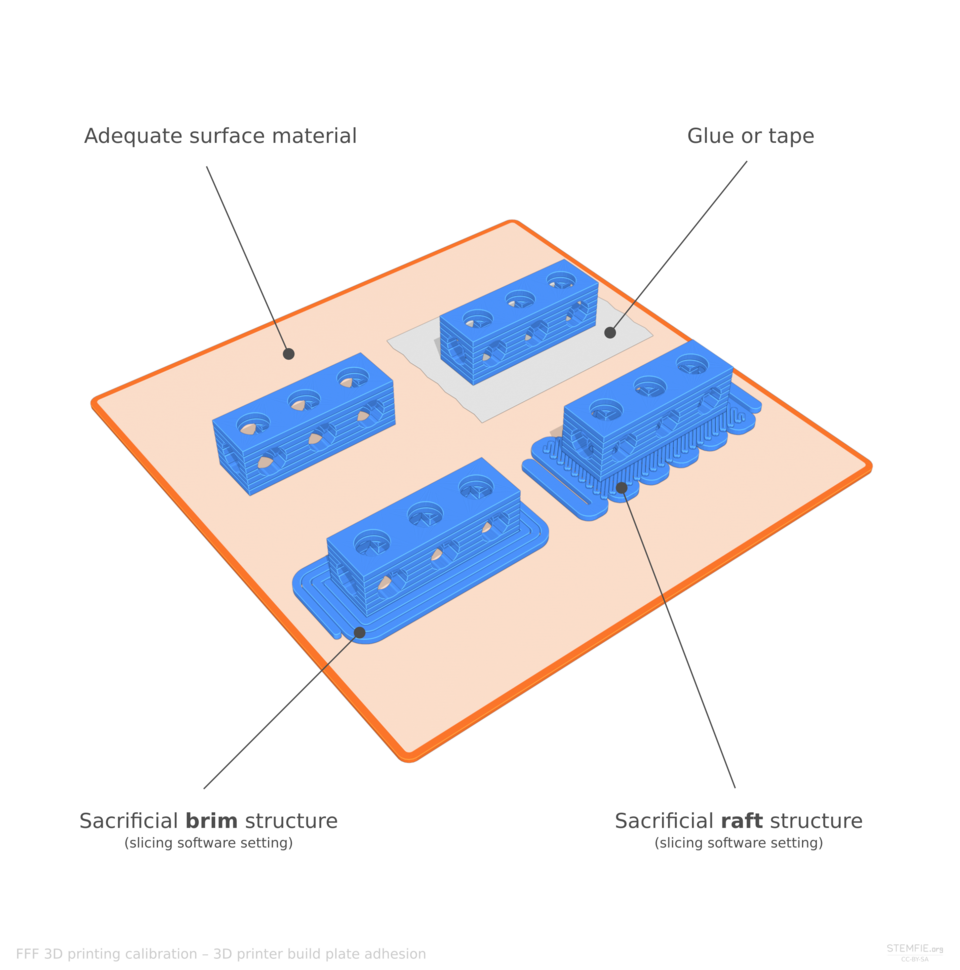
up off the print bed
Warping / Lifting Corners
Thermal contraction as the part cools unevenly causes the base to peel off the bed. Worst on ABS, ASA, and large flat parts with no brim.
Raise bed temperature. Add a wide brim. Use an enclosure (critical for ABS/ASA). Apply Magigoo, glue stick, or hairspray to the bed. Remove draughts near the printer.
Diagram: STEMFIE.org, CC BY-SA 4.0

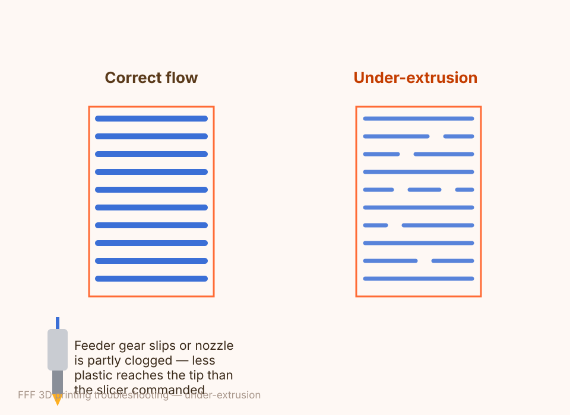
and missing wall segments
Under-Extrusion / Gaps
Insufficient filament reaching the nozzle — partial clog, feeder gear slipping, or flow rate set too low. Results in gaps, weak walls, and holey top surfaces.
Increase flow rate by 5–10%. Clean or replace the nozzle. Check feeder gear tension and look for filament grinding marks. Raise nozzle temperature by 5 °C.
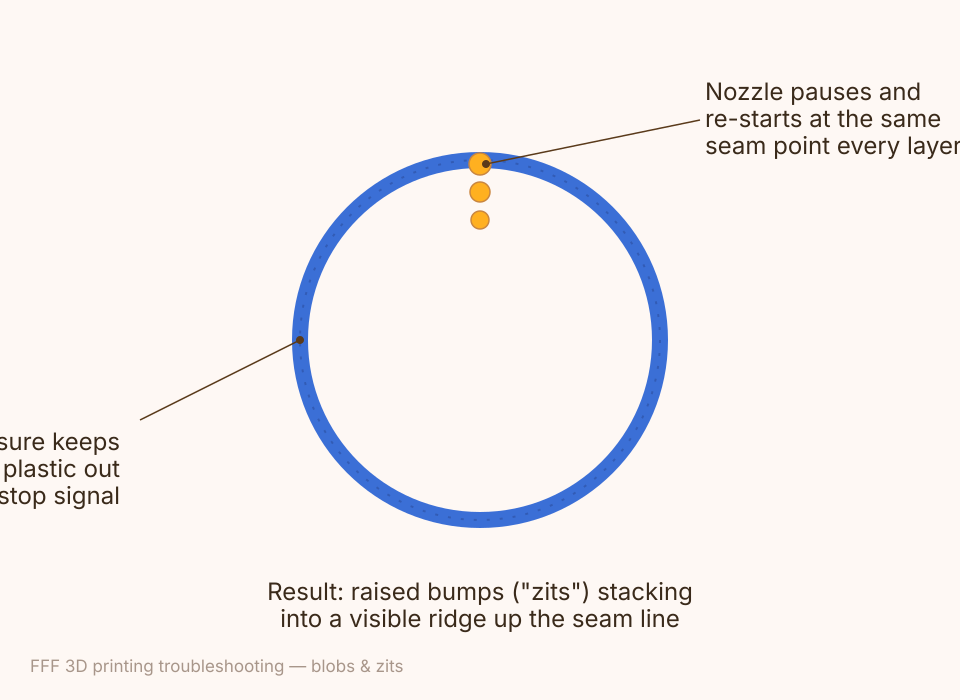
at layer seam points
Blobs / Zits on Surface
Extra material oozes at perimeter start/end points when the nozzle briefly pauses. Caused by excess pressure in the hotend, especially with fast outer walls.
Enable seam hiding (random or aligned). Tune pressure advance (Klipper) or linear advance (Marlin). Reduce outer wall speed. Lower nozzle temperature slightly.
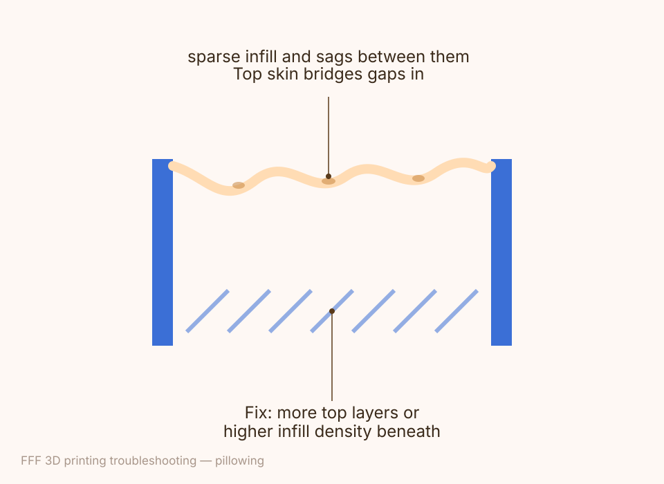
with infill holes showing through
Poor Top Surface / Pillowing
Too few top layers bridging over the infill gaps, or infill density too low to support the top skin, causes the surface to sag, bubble, or leave holes.
Increase top layers to a minimum of 4–6. Raise infill to at least 20% for enclosed tops. Enable "ironing" for an ultra-smooth top surface. Increase cooling on the top layers.
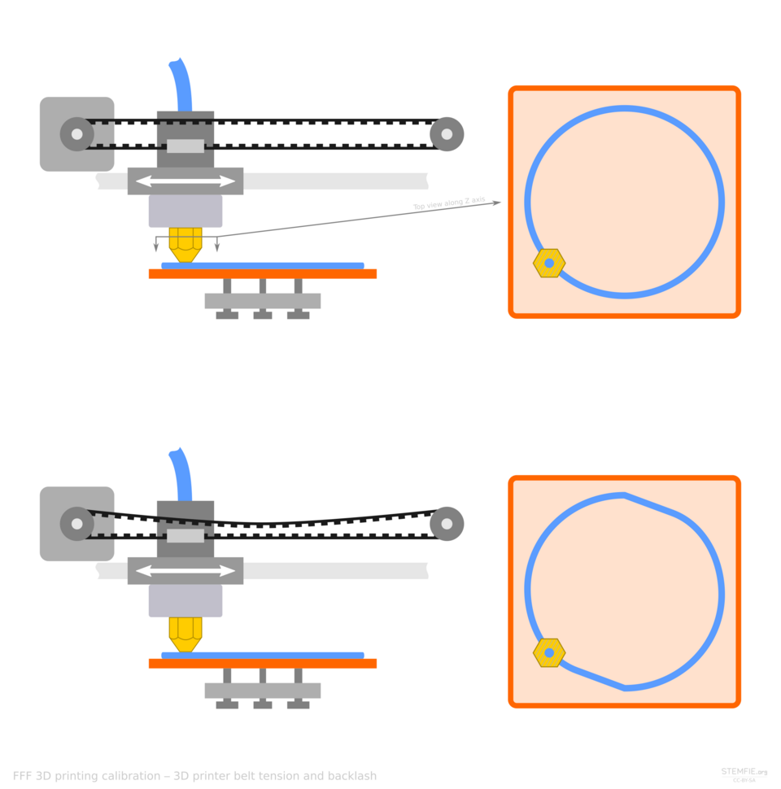
ripple lines on the wall surface
Layer Lines / Banding
Repeating horizontal ridges caused by frame vibration at speed, Z-wobble from a bent lead screw, or inconsistent extrusion from a worn feeder gear.
Tighten XY belts. Enable input shaping (Klipper) or reduce speed. Check and replace a bent lead screw or Z-coupling. Inspect the feeder gear for wear and grinding.
Diagram: STEMFIE.org, CC BY-SA 4.0

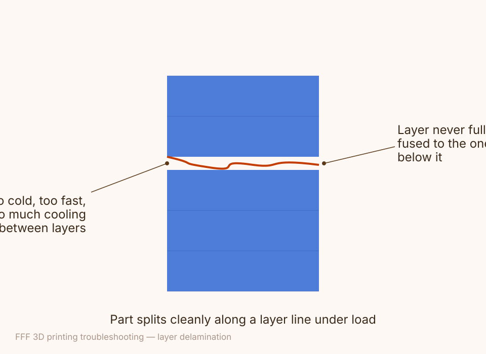
or split between layer lines
Layer Delamination / Splitting
Layers fail to fuse together — temperature too low to melt properly into the previous layer, speed too high for the material to bond, or excessive cooling on ABS/ASA.
Raise nozzle temperature by 5–10 °C. Reduce part cooling fan to 30–50% for ABS/ASA. Lower print speed. Dry the filament — moisture prevents proper layer fusion.
11b — Running the Class Printer
Operator's Manual: MakerBot SKETCH Large
This is everything you need to run the class MakerBot SKETCH Large on your own when the teacher is away: start it, prepare and start a print, change filament, take the print off, keep the machine healthy, and fix the problems that come up. It is written from MakerBot's own SKETCH Large user manual and support pages. The printer has a 220 × 200 × 250 mm build volume, a 0.4 mm stainless-steel nozzle, a heated removable build plate, and a camera.
Jump to: The rules · Parts · Start-up · Prepare a file · Run a print · After a print · Filament · Calibrate · Maintenance · Troubleshooting · When to stop · CloudPrint vs. Cura
The operator rules
Who may do what
- Any trained student: start-up, send and start a print, watch it, pause or cancel it, take the print off, clean the plate, load and unload filament, run calibration, shut down, write the log.
- Lead operator only (a student named by the teacher, with a second person present): removing or installing the extruder and the monthly guide-rod grease. Steps are in the Maintenance section.
- Never: factory reset, firmware update, changing Wi-Fi or accounts, opening the printer's covers, bypassing a sensor, or using a knife or metal scraper on the plate. The teacher does those.
Always
- Two people present when the printer is running; one stays in the room for the whole print.
- Watch the first few layers of every print, every time.
- Only MakerBot PLA for Sketch or MakerBot Tough filament. No other filament, no mystery spools.
- Nozzle and plate are hot (the plate can reach 110 °C). Wait for the plate to cool before touching it.
- Keep hair, sleeves, lanyards and fingers out of the moving gantry. Keep the front door closed while printing.
- Leave the room's ventilation on. The printer has a particle filter, but fumes and fine particles are still released.
- Print in the room's normal range: the printer is rated for 15–30 °C and 10–70% humidity, not condensing.
If anything is hot, burning, smoking or sparking
Flip the power switch off (bottom right side of the printer), unplug it if you can do so safely, move people back, and tell an adult in the building. Do not try to fix it. Do not use water on it.
Know the machine
| Part | What it does |
|---|---|
| Power switch | Bottom right side. Toggle to turn the printer on or off. |
| Touchscreen | 4.3 in color screen, upper right. Home screen has three icons: PRINT, MATERIAL, SETTINGS. |
| USB flash drive port | Under the touchscreen. The USB drive must be formatted FAT32; an NTFS drive will not show up. |
| Extruder | The removable print head: it pulls filament in, melts it, and pushes it out of the nozzle. It clips into the carriage and has two release buttons or clips on its sides. |
| Guide tube & connector | Plastic tube that carries filament from the spool enclosure to the extruder. |
| Spool enclosure, hub, material port | Where the spool sits and the filament enters the tube. |
| Heated removable build plate | Flexible plate with the Grip Surface. Bend it to pop a print off. |
| Camera | Lets you watch from CloudPrint. The camera and USB port cannot be used at the same time (see Settings → Utilities → Camera). |
| Front door | Keep closed while printing. |
1 · Start-up checklist (every session)
- Look first. Read the last lines of the log. Is a problem noted? Is the printer marked down? If so, stop here and do not print.
- Check the room. Table steady, nothing leaning on or behind the printer, no fan blowing on it, ventilation on, area around it clear.
- Power on with the switch on the bottom right side. Wait for the home screen with PRINT, MATERIAL, SETTINGS.
- Check the spool. Is there enough filament for your print? A 1 kg spool is about 1000 g; CloudPrint shows the grams your print needs. Does the spool turn freely? Is the filament free of tangles and kinks?
- Check the build plate. The plate must be fully seated, flat, clean and cool. Wipe off dust. Fingerprints and skin oil ruin adhesion, so touch only the edges. If the surface is gouged, peeling, or will not lie flat, mark the printer down and tell the teacher.
- Check the nozzle. Look for stuck plastic blobs on the nozzle or the plate area. If you see them, you must remove them cold (see Maintenance) before you print.
- Check the log for the last calibration and the last print. If prints have been failing, recalibrate first (see Calibrate).
2 · Prepare your file
The SKETCH Large prints from a .makerbot file. You make one in MakerBot CloudPrint, MakerBot's free slicer that runs in the browser at cloudprint.makerbot.com. It also opens STL and several other 3D file types. Use the class MakerBot account that the teacher set up and the shared printer in your workspace.
- Export your design from your CAD tool as an STL (or another supported type) in millimeters. Name it lastname-part-v1.
- Open CloudPrint and sign in. Add or open your model. Check that it is the right size, that it fits the 220 × 200 × 250 mm volume, and that the biggest flat face is on the plate.
- Pick the SKETCH Large and the material (PLA or Tough, matching the spool). Use Balanced print mode unless you have a reason the teacher approved; MakerBot tunes it for the best overall quality and speed. Its layer height is tuned for 200 microns (0.20 mm).
- Decide supports and adhesion (supports for overhangs past about 45°; a raft for tall or small-footprint parts). Use the preview to check, layer by layer.
- Read the estimate. Write down the time and the grams of material. A print that will not finish before you must leave needs the teacher's approval, or it waits.
- Send it.
- Network: press PRINT. CloudPrint slices the model and sends the .makerbot file straight to the printer. It will remind you to clear the build plate.
- USB: if CloudPrint is not connected to the printer, PRINT opens a dialog to export a .makerbot file instead. Save it to the root of a FAT32 USB drive, then put the drive in the port under the touchscreen.
3 · Run the print
- Confirm the plate is clear. Nothing on it, no old brim or raft bits.
- On the printer: if you sent it by network, tap BEGIN PRINTING on the touchscreen. From USB or internal memory, tap PRINT, choose the file (tap the folder icon to switch between the USB drive and internal storage), then tap PRINT NOW. Tapping the play button on a filename starts it immediately; tapping the filename opens its details.
- Wait for heating. The extruder and plate heat first, then the print begins.
- Watch the first layer (the first 2–5 minutes) up close. It should be a smooth, slightly flattened, continuous line, stuck to the plate with no gaps and no curling edges. If it is not, cancel immediately and see Troubleshooting. A first layer that is wrong never gets better by itself.
- Check again after 10 minutes, then every 15 minutes, or watch from the camera. The screen shows progress.
Pause
Tap the pause icon on the progress screen, or select the printer in CloudPrint and choose PAUSE. Use it if you need to check something or the filament is running out. Do not touch the nozzle or the plate; they are hot.
Cancel
Tap the top of the screen where it says printing or paused. A drop-down appears with cancel. Cancel for any failure: a lifted corner, spaghetti, the part knocked loose, strange noises, or a bad first layer. Then let things cool, clear the plate completely, and log it.
Running out of filament
The printer detects filament. If it pauses for empty material, load a new spool through MATERIAL → LOAD and resume only as the screen instructs. If the new spool is a different color, remember that the leftover plastic in the nozzle will blend for a short stretch. If the part must be one clean color, cancel and restart with enough filament.
4 · After the print
- When the screen says the print is complete, wait for the plate to cool. Hot plastic bends and sticks. Give it several minutes.
- Open the door and lift the build plate out of the printer (flexible plate, so hold it flat and by the edges).
- Bend the plate slightly so the print pops loose. If it stays stuck, use the tool that came with the printer. Never pry with a knife or metal scraper.
- If bits of raft remain on the plate, remove them with a flat, non-sharp tool such as a putty knife. Never use a knife on the raft: it damages the build plate.
- Clean the plate of any scraps, touching only the edges, and set it back in the printer fully seated.
- Tidy up: remove the print from the printer area, put the USB drive away, close the door, and fill in the log.
5 · Load, unload and store filament
The SKETCH Large has a filament sensor and an auto load/unload system, so you let the printer do the work and follow its on-screen steps. The sequence below is the manual's.
Load
- Prepare the end. Pull a few inches off the spool and cut the tip to a clean edge with flush cutters or scissors. Straighten bent or crimped sections, or cut them off. Bent filament gets stuck in the tube.
- Brittle test. Bend a piece back on itself. If it survives at least 3 bends, it is fine. If it snaps sooner, remove at least 2 feet (60 cm), test again, and replace the spool if it still snaps.
- If the filament has been used before, remove any old, scarred filament near the end.
- Put the spool in the spool enclosure and insert the end into the material port.
- On the touchscreen choose MATERIAL → LOAD and follow the instructions.
- Wait for plastic to flow from the nozzle. If it does not, see Troubleshooting.
Unload
- Choose MATERIAL → UNLOAD and follow the instructions.
- While the filament backs out of the guide tube, keep the spool tightly wound with your hand so it does not unravel and tangle.
- Rewind the filament onto the spool. Do not leave the free end loose.
- Push the free end into one of the storage slots in the spool rim. This stops tangles and lets the next person find the end instantly.
- Put the spool in a sealed bag or box with desiccant, in a dry place.
6 · Calibrate (nozzle height)
Calibration tells the printer exactly where the plate is. Run it when prints won't stick, the nozzle scrapes, material won't come out at the start of a print, the extruder has been changed, or print quality has dropped.
- Make sure the plate is clean, cold and seated. Use a normal sheet of printer paper (about 0.25 mm thick).
- On the touchscreen choose SETTINGS → UTILITIES → CALIBRATION and follow the prompts.
- When asked, slide the paper back and forth between the nozzle and the plate. Tap the up and down arrows until you feel slight friction, like a pencil writing on paper. Too tight and the paper will crumple or stick; too loose and the paper moves freely.
- Tap OK to finish.
- Print a small test (a 20 mm cube is ideal), check the first layer, and record the calibration in the log.
7 · Shut down (every session)
- No print running. If one is still running, it stays running and you stay in the room.
- Let the nozzle and plate cool, and take the print and tools off the plate.
- Unload the filament if the printer will sit more than a few days; otherwise leave the free end safely in the guide tube or storage slot.
- Clean the plate, set it back, and close the door.
- Power off with the switch only after the screen shows idle and the extruder is cool. Complete the log.
8 · Maintenance
| When | Task | Who |
|---|---|---|
| Every print | Check first layer. Clean and inspect the plate. Check spool and filament path. Log it. | Operator |
| Weekly | Brush stray plastic from around the plate area when everything is cold. Dust the outside, the vents and the door. Check cables. Check the guide tube is seated at both ends. Wipe the camera lens with a dry soft cloth. | Operator |
| Every 30 days of regular use, or after a long break | Apply grease to the guide rods, as MakerBot's manual says. Use only the grease the teacher keeps for this; do not use other lubricants. | Lead operator |
| After a jam, a crash, or any drop in quality | Run calibration. Check the extruder is seated (no gap at the seam). | Operator |
| When prompted by the screen | Follow the prompt. Firmware updates are done by the teacher. | Teacher |
| When the plate is worn or damaged | Replace it with a new MakerBot build plate from the store. | Teacher |
Lead operator: remove the extruder
- Unload the filament first (MATERIAL → UNLOAD). It is possible to remove the extruder with filament still inside, but unloading is recommended.
- Let the extruder cool below 50 °C, then power off.
- Press the left and right clips on the sides and pull the extruder straight down until it releases. Wear gloves to avoid pinching if you need a firmer grip.
- If filament is still inside, cut it so that several inches stay attached to the extruder, then rotate the spool so the free end lies back in the guide tube.
Lead operator: install an extruder
- Printer powered off.
- Push the extruder straight up into the carriage until you hear a click.
- Check the extruder detachment buttons have sprung back, and that there is no seam between the extruder and the carriage (a visible seam means it is not seated).
- Power on and run calibration (SETTINGS → UTILITIES → CALIBRATION).
- A new extruder comes with a slip that carries a temperature-offset number; do not throw the slip away. If the screen asks for the number, enter it.
Removing the guide tube
Press down on the guide tube connector, then pull the tube up and out. Reseat it by pushing the tube fully in until the connector holds it. A loose guide tube causes load and feed errors.
9 · Troubleshooting
Work down the list cheapest first, change one thing at a time, and test with a small print. Write what you tried in the log.
| Symptom | Likely cause and what to do |
|---|---|
| Printer won't power on | Check the power cable at both ends and the power switch. Try another outlet. If still dead: mark it down and tell the teacher. |
| Printer not visible in CloudPrint | Check it is powered and that the network symbol on the screen is connected. Reload the page and sign in again. As a workaround, export a .makerbot file to a FAT32 USB drive. |
| USB drive not seen on the printer | FAT32 only (NTFS is invisible). File must be a .makerbot or STL. Camera and USB cannot be on at once: check SETTINGS → UTILITIES → CAMERA (Auto mode turns USB on when idle and off while printing). |
| Material loads but nothing comes out at the start of a print | The nozzle is too close to the plate so plastic has nowhere to go. Run calibration (paper test) and reprint. |
| Print won't stick, corners lift, part moves | Wipe the plate (touch only the edges). Make sure it is fully seated. Recalibrate the nozzle height. Turn on a raft in CloudPrint. Reduce drafts. Orient the part so the largest flat face lies on the plate. |
| First layer is thin or see-through, or the nozzle scrapes | The nozzle is too close or too far. Cancel. Recalibrate with the paper test. |
| Filament won't load | Re-cut the tip to a clean edge and remove bent sections. Do the brittle test. Make sure the spool unwinds freely and the guide tube is seated. Try LOAD again. If it stops partway, squeeze the two tabs on the extruder's side and push the filament firmly by hand while the extruder is heated, as the screen directs. Repeat 3–4 times to push a small blockage through. |
| Filament won't unload | Follow MATERIAL → UNLOAD again so the extruder is hot. Do not yank the filament. If it will not come out, stop and ask the teacher. |
| Under-extrusion (gaps, thin walls, plastic stops mid-print), or "air printing" (the nozzle moves but nothing comes out) | Cancel. Check for a tangled or stuck spool, brittle filament, or a damp spool. Reload (cut, brittle test, load). If it was a one-off, a good load will fix it. If it keeps happening on every print, the extruder is wearing and needs replacing: mark it down. |
| Extruder temperature error | The extruder is probably not seated in the carriage. Let it cool below 50 °C, power off, press the clips and reseat it until it clicks, then check there is no seam. A lead operator does this. |
| Stringing and blobs | Usually wet filament or a long hot print. Store filament dry. Try a fresh spool. Clean the nozzle when cold. |
| Layer shifts, ringing or odd noises | Did the table get bumped? Is something blocking the gantry? Is the part knocked loose? Cancel, clear the plate, reprint. If noises continue, tell the teacher; the guide rods may need grease. |
| Axis does not move, grinding at start, "homing" problem | Cancel. Power off, check nothing blocks the gantry or the plate area and that the plate is flat. Power on and use SETTINGS → UTILITIES → HOMING. If it repeats, mark it down. |
| Part is the wrong size | Check the model's units and scale in CloudPrint, then measure a 20 mm calibration cube with calipers. If the cube is also wrong, mark it down. |
| Print stops mid-way with a message | Read the whole message. Common causes are out of filament, door open, power or network drop. Fix the cause; resume only if the screen offers to. Otherwise cancel. Log the message word for word. |
10 · When to stop and leave it for the teacher
- Smoke, burning smell, sparks, melted casing, or a hot cable.
- The extruder, nozzle or plate is damaged or won't seat.
- The same failure happens twice in a row after you have recalibrated and reloaded.
- Filament won't unload, or you've tried the load/clog steps above and it still won't extrude.
- Any error message you can't clear, or one that tells you to contact support.
- Anyone is hurt.
The "printer down" note should say: date and time, your name, what you were doing, the exact words on the screen, what you tried, and what is left on the plate. Photograph the screen and the failure. The teacher can then take it to support.makerbot.com (guides and troubleshooting) or my.makerbot.com/support (open a case) with the evidence ready.
The printer log
One line per print: date · name · file · material and spool · estimated vs. actual time · result (good / flawed / failed) · calibration done? · problems and what you did. Keep it on paper beside the printer or in the shared sheet. The log is how the next operator, and the teacher, find out what happened while they weren't there.
11 · Slicing with MakerBot CloudPrint vs. UltiMaker Cura
A slicer cuts a 3D model into layers and writes the instructions the printer follows. The SKETCH Large uses MakerBot CloudPrint and prints .makerbot files. UltiMaker printers use UltiMaker Cura. Every slicer asks the same questions, but a file sliced for one printer is not a file for the other: slice again, with that printer's profile.
| Idea | MakerBot CloudPrint (SKETCH Large) | UltiMaker Cura (UltiMaker printer) |
|---|---|---|
| Printer and material | Choose the SKETCH Large and MakerBot PLA or Tough. | Choose the exact UltiMaker model, the nozzle (for example 0.4 mm) and the material. |
| Quality | Print mode: Balanced (recommended) or a high-resolution mode. | Profiles such as Fast, Normal and Fine set layer height and speed; Custom shows every setting. |
| Layer height | Set by the print mode (Balanced is tuned for 0.20 mm). The printer supports 0.10–0.40 mm. | Layer Height. Stay under about 80% of nozzle diameter. |
| Walls | Shells / wall count in the settings. | Wall Line Count under Shell. |
| Infill | Infill percentage and pattern in the settings. | Infill Density and Infill Pattern under Infill. |
| Supports | Turn supports on and check the preview. | Generate Support, then Support Structure (Normal or Tree), placement and overhang angle. |
| Bed adhesion | Raft on or off (the Grip Surface sticks well, but tall thin parts may still need a raft). | Build Plate Adhesion Type: Skirt, Brim, Raft or None. |
| Preview | Layer preview shows time and material. | Preview shows layers, line types and the time/material estimate. |
| Send to printer | PRINT sends a .makerbot over the network, or exports one for a FAT32 USB drive. | Print over the network (UltiMaker Digital Factory) or save to a USB drive. |
Workflow: one model, two printers
- Check the model. Export your CAD model as STL or 3MF in millimeters. Check it fits the smaller build volume if it will go to both machines.
- Slice it in the first slicer. Pick that printer's profile and material. Orient the part so the largest face lies on the plate and overhangs are few.
- Read the preview. Scroll through the layers. Look at the first layer, thin walls, supports, and the estimated time and grams. Write all four in your notes.
- Repeat in the second slicer using the equivalent settings from the table.
- Compare. Are the layer heights equal? Does one slicer put supports where the other does not? Which estimate is longer, and why?
- Print on the printer that is available. Don't run both without the teacher's approval.
Check yourself
- The first layer looks see-through and the nozzle is scraping. What do you do, in order?
- Filament snaps when you bend it twice. Can you load it? What do you do?
- You get a "printer not found" in CloudPrint with a class waiting. What is the backup way to get the file to the printer, and what must the drive be formatted as?
- A part finishes and is stuck to the plate. Describe the safe way to remove it and a raft remnant.
- Why is a model sliced in UltiMaker Cura sliced again in CloudPrint instead of copied across?
- Name three things that mean "stop, mark it down, tell an adult".
Sources and limits
Procedures follow the MakerBot Sketch Large user manual (Oct. 2022) and MakerBot's support articles for the SKETCH line (material not extruding, air printing, error messages, replacing the extruder). Specifications: MakerBot SKETCH Large. Cura setting names: UltiMaker Cura. Menu names and software change with updates; the touchscreen and MakerBot's current pages win. Practical tips that are not in the manual (watching the first layer, the log, the "stop" list, one-change-at-a-time) are classroom practice.
12 — Check Your Understanding
Quick Quiz
1. Using a conservative 75% guideline, what layer height corresponds to a 0.4 mm nozzle? (A verified printer profile may allow other heights.)
2. Which method is generally MORE effective at increasing part strength?
3. Why does FDM print TPU slowly (20–35 mm/s)?
4. What causes stringing between printed parts?
5. Which material should you use for an outdoor part that must resist UV and rain?
6. Why is washing a PEI sheet with warm water and dish soap more effective than only wiping with Isopropyl Alcohol (IPA)?
7. Why do vertical cylindrical holes print smaller than nominal CAD dimensions in FDM?
8. What happens when printing abrasive filament (carbon fiber or glow-in-the-dark) with a standard brass nozzle?
13 — Exit ticket: evidence before a full print
Report your baseline, one changed setting, and the measured model difference. Which feature of your prototype could suffer? Describe a small test print, the load or fit you would test, and what result would convince you to keep the change.
Sources, textbook figures, and model limits
Prusa: layers and perimeters explains layer-height limits and the role of walls. It gives an approximately 80% guideline for a typical nozzle; the 75% example here is deliberately conservative. Actual extrusion width can differ from nozzle diameter.
MakerBot: SKETCH Large specifications lists the build volume, 0.4 mm nozzle, 0.10–0.40 mm layer resolution, and material compatibility. Its published range does not make every height a recommended classroom setting. Generic scenario values are comparisons, not SKETCH profiles.
NIOSH: safe 3D printing for schools and makerspaces covers emission controls and operating practices.
Textbook photographic and diagrammatic sources: STEMFIE.org (first-layer gap, leveling, elephant's foot, cooling fan airflow, CC BY-SA 4.0), A7N8X (hotend assembly, CC0; gyroid infill, infill patterns, tree supports, raft adhesion, delamination, underextrusion, CC BY-SA 4.0), Luke Jones (first-layer macro, CC BY 2.0), David Elliott (nozzle extrusion, CC BY 2.0), syvwlch (20mm calibration cube caliper measurement, CC BY 2.0), Collin Wesson / U.S. Space Force (additive manufacturing lab, Public Domain). Complete metadata and download hashes are tracked in textbook-sources.json.
14 — Design & Print in the Classroom
Ready to Build? Design Parametric Parts in Forge
Put the golden rules to work with Forge — ClassroomOS’s parametric 3D CAD tool. Design electronics cases, spiral fidgets, gear pairs, and custom clips with real-time design-rule checks for nozzle walls, bridges, overhang angles, and bed fit, then download clean STLs ready for MakerBot CloudPrint.